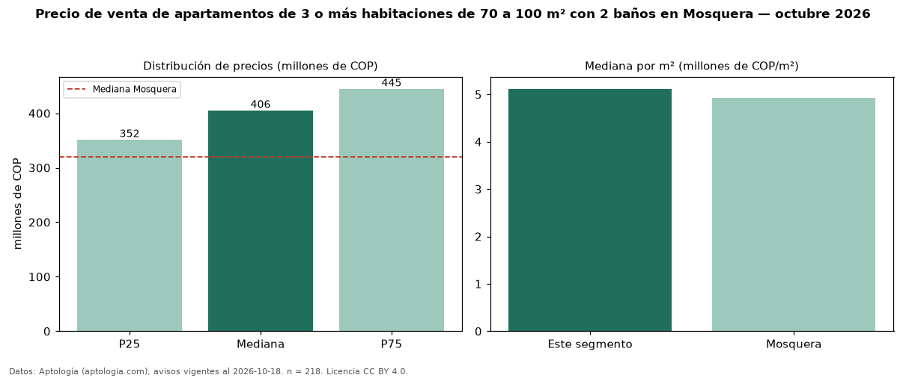

Precio de venta de apartamentos de 3 o más habitaciones de 70 a 100 m² con 2 baños en Mosquera — octubre 2026
En Mosquera, la mediana de precio de venta de apartamentos de 3 o más habitaciones de 70 a 100 m² con 2 baños es COP 406 millones, según 218 avisos vigentes. Frente a la mediana de los apartamentos de 3 o más habitaciones de 70 a 100 m² en venta de Mosquera (COP 420 millones, n = 259), queda 3 % por debajo; este segmento reúne el 84 % de esos avisos. Por metro cuadrado, la mediana es COP 5,12 millones/m² (n = 218), 0 % por debajo de los apartamentos de 3 o más habitaciones de 70 a 100 m² en venta de Mosquera (COP 5,14 millones/m²). El área mediana anunciada es 79 m². La administración mediana declarada es COP 360.000 al mes (n = 179). El estrato más frecuente es 4 (80 % de los avisos con estrato). La mediana de todos los apartamentos en venta de Mosquera es COP 320 millones (+27 % de diferencia). La mitad central de los avisos va de COP 352 millones a COP 445 millones (razón 1,3), una dispersión baja. Datos: Aptología (aptologia.com), CC BY 4.0 — https://www.aptologia.com/venta/mosquera. Archivos: PDF, CSV con las cifras y gráfica PNG.

| Avisos únicos | 218 |
|---|---|
| Percentil 25 | COP 351.750.000 |
| Mediana | COP 405.550.000 |
| Percentil 75 | COP 445.000.000 |
| Mediana por m² | COP 5.119.047 |
Fuente: avisos vigentes de portales inmobiliarios recopilados por Aptología, deduplicados (mínimo 30 avisos únicos por celda). Precios pedidos, no cerrados. Fecha: 2026-10-18.